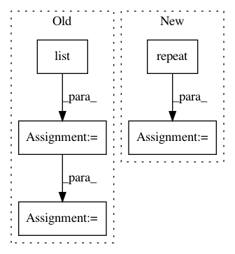

9a0e35a14e0ada29a71ef24e334187fa1d5af8ce,chainerrl/wrappers/vector_frame_stack.py,VectorFrameStack,__init__,#VectorFrameStack#Any#Any#Any#,75
Before Change
self.stack_axis = stack_axis
self.frames = [deque([], maxlen=k) for _ in range(env.num_envs)]
orig_shape = env.observation_space.shape
shape = list(orig_shape)
shape[self.stack_axis] *= k
self.observation_space = spaces.Box(
low=0, high=255, shape=shape, dtype=np.uint8)
def reset(self, mask=None):
After Change
orig_obs_space = env.observation_space
assert isinstance(orig_obs_space, spaces.Box)
low = np.repeat(orig_obs_space.low, k, axis=self.stack_axis)
high = np.repeat(orig_obs_space.high, k, axis=self.stack_axis)
self.observation_space = spaces.Box(
low=low, high=high, dtype=orig_obs_space.dtype)
def reset(self, mask=None):
In pattern: SUPERPATTERN
Frequency: 3
Non-data size: 5
Instances
Project Name: chainer/chainerrl
Commit Name: 9a0e35a14e0ada29a71ef24e334187fa1d5af8ce
Time: 2019-04-17
Author: muupan@gmail.com
File Name: chainerrl/wrappers/vector_frame_stack.py
Class Name: VectorFrameStack
Method Name: __init__
Project Name: chainer/chainerrl
Commit Name: a985c604154cf37daa730af2c100ae6e81268f73
Time: 2019-04-17
Author: keisuke.nakata.919@gmail.com
File Name: chainerrl/wrappers/atari_wrappers.py
Class Name: FrameStack
Method Name: __init__
Project Name: dmlc/dgl
Commit Name: 2cdc4d3c1d17e1ac8be1c44ca54d772084c76f18
Time: 2020-03-21
Author: wmjlyjemaine@gmail.com
File Name: tutorials/models/4_old_wines/2_capsule.py
Class Name:
Method Name: init_graph